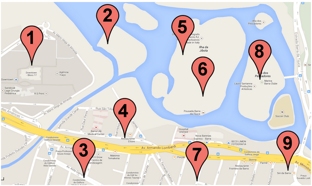

Carlota no Carnaval do Rio
TL: 1 segundo (~50 casos)
ML: 64 Mb
Carlota foi visitar o Carnaval do Rio. Ela não é muito boa com distâncias, por isto pediu a sua ajuda. Você tem o mapa da cidade com pontos turísticos e calçadas os conectando entre si em ambas direções. (Se uma calçada conecta o ponto 1 ao ponto 2, Carlota pode caminhar do ponto 1 para o ponto 2 e também do ponto 2 para o ponto 1).
Cada ponto é identificado por um número único de 1 a N. Carlota está atualmente no ponto 1 e deseja chegar ao ponto N. É possível que não se possa chegar em alguns pontos, isto significa que não é possível atingí-los utilizando apenas calçadas. A pergunta é: Carlota consegue chegar no destino apenas andando?

Entrada
A primeira linha de cada caso de teste contém os números 2 <= N <= 1000 e 1 <= M <= 10^5, indicando o número de pontos turísticos e número de calçadas, respectivamente. Cada uma das M linhas seguintes representa uma calçada. Há dois números em cada linha, que são os identificadores de dois pontos conectados pela calçada. Leia até o EOF.
Saída
Imprima "S" caso for possível chegar ao destino e "N" caso contrário.
Exemplos
Entrada de Teste
3 2
1 2
2 3
4 4
1 2
2 1
3 1
4 1
3 3
1 1
1 1
1 1
Saída de Teste
S
S
N